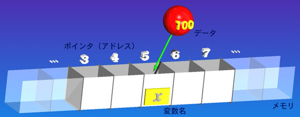
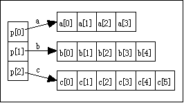
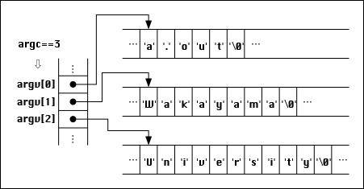

上の処理を図で表せば右のようになります。
int *pa; という定義によって、
pa という int 型のポインタ変数が用意されます。
これは「*pa が int 型」であるという定義であって、
* が取れた pa が「int 型のポインタ変数」になります。
上の処理を図で表せば右のようになります。
int *pa; という定義によって、
pa という int 型のポインタ変数が用意されます。
これは「*pa が int 型」であるという定義であって、
* が取れた pa が「int 型のポインタ変数」になります。
コンピュータのメモリは、 言わばデータを格納するための「箱」がいっぱい並んだようなものでです。 変数 x を定義するということは、 例えばこの箱の一つを確保して、 それに「この箱は変数 x として使うよ」というシールを貼ることに相当します。

したがって、変数 x に 100 を代入するというのは、 メモリの中から x というラベルを貼った箱を探し出して、 そこ中に 100 という数値を入れるという操作になります。
int x; x = 100; |
データを格納した箱を特定するためには、 変数名を使う以外に、 その箱が存在する「場所」を直接指定する方法もあります。 実はメモリのひとつひとつの箱には、それぞれ番号が付けられています。 この番号のことを「番地 (address)」と呼びます。 この番号を使ってデータの格納場所を指定できます。
ポインタはこの番地のような、 データの格納場所を示す値をデータとして取り扱うデータ型です （なんちゅう説明だ…）。
上図では変数 x は５番地のメモリの内容を指しています。 変数 x の格納場所を示すポインタを求めるには、 & という単項演算子を使います。
&x |
この場合 &x は５という定数です（変数 x の格納場所は固定ですから）。 これをポインタ定数と呼びます。
配列変数の場合、 配列変数名が確保した記憶領域の先頭を示すポインタ定数になっています。 文字列定数の値もその文字列が格納されている場所を示すポインタ定数です。 だから "Wakayama University"+9 が "University" になるのです。
int a, b; // int 型の変数 a, b を定義 int *pa; // int 型のポインタ変数 pa を定義 a = 100; // a に 100 を代入 pa = &a; // pa に a のポインタを代入 b = *pa; // b に pa という場所に格納されている内容 (100) が代入される |
上の処理を図で表せば右のようになります。
int *pa; という定義によって、
pa という int 型のポインタ変数が用意されます。
これは「*pa が int 型」であるという定義であって、
* が取れた pa が「int 型のポインタ変数」になります。
ポインタ変数が保持するデータはポインタ（番地）であり、 その場所に格納されているデータを取り出すためには、 * という単項演算子を用います。 * は掛け算と同じ記号ですが、 ポインタ型の変数に対する単項演算子として使用した場合は、 ポインタによって示されている場所に格納されているデータを取り出します。
ポインタの値は、
オペレーティングシステムによってプログラムに割り当てられたメモリ空間内の、
どこか一箇所を指していなければなりません
（どこも指していないということを明示するために 0 という値も用います）。
* 演算子によってその内容を操作しようとする場合は、
そのポインタが変数のようにデータを記憶する目的で割り当てられた
メモリの領域を指していなければなりません。
もし不正な内容のポインタを * 演算子によって操作しようとすれば、
プログラムは正常に動かないか、異常終了します。
#include <iostream.h>
int main(void) {
int x, *px;
cout << "整数値を一つ入力してください:";
cin >> x;
*px *= 2;
cout << "２倍すると " << x << endl;
return 0;
} |
修正したソースプログラムをメールに添付して tokoi まで送ってください。Subject:（件名）は kadai22 としてください。
int a[10]; int *pa0, *pa1; pa0 = &(a[0]); // a[0] のポインタを pa0 に代入 |
同様に a[1] のポインタも &(a[1]) で求めることができますが、 配列の各要素はメモリ上に連続して配置されているので、 a[0] のポインタが分かっているなら、 ２つ目の要素 a[1] のポインタは次のようにしても求めることができます。
pa1 = pa0 + 1; // a[1] のポインタを pa1 に代入 |
すなわち a[0] および a[1] の内容は、 それぞれ次のようにして利用できます。
int a[10]; int *pa0, c, d; pa0 = &(a[0]); // a[0] のポインタ c = *pa0++; // a[0] の内容を c に代入して pa0 を１増す d = *pa0 // pa0 は &(a[0]) より１増えているので d には a[1] の内容が代入される |
* という演算子の優先順位は ++ より低いので、 上の例では c に a[0] の内容が入り、 その後 pa0 の値は &(a[1]) になります。 もし *pa（すなわち a[0]）の内容を１増すなら、 ( ) を使う必要があります。
c = (*pa0)++; |
この例では c に a[0] が入り、 その後 a[0] の内容が a[0] + 1 になりますが、 pa0 に格納されているポインタの値は変化しません。 なお、下の例では * が ++ より pa0 に近いところにあるため * が先に処理されます。
c = ++*pa0; |
この場合は a[0] の内容が１増され、それが c に代入されます。 pa0 に格納されているポインタの値は変化しません。
実は上記において定義されている配列 a[10] の a は、 それ自体が配列として確保されたメモリ領域の先頭を指すポインタ定数、 すなわち &(a[0]) と等しい値を持ちます。 従って、
int a[10], b, c; int *pa0, *pa1; pa0 = &(a[0]); // a[0] のポインタ pa1 = pa0 + 1; // a[1] のポインタ b = pa0[1] // b には a[1] の内容が入る c = pa1[-1] // c には a[0] の内容が入る |
上の例では、
従って、確保された領域からはずれるような 配列の添え字やポインタを使用しても、 コンパイルの際にはエラーにはなりませんし、 問題なく実行できるように見えることもあります。 しかしこれは非常に発見しにくいプログラムの異常動作の原因になりますし、 大抵は致命的なエラーを引き起こします。 ポインタを使う場合には細心の注意が必要です。
char *string; string = "Hello!"; |
文字列定数の値は、 その文字列が格納されている位置を指すポインタ定数になります。 string[0] は 's'、string[5] は '!' になります。 次の例は 0～15 の値を持つ整数 i を、 それに対応する十六進数の文字 c に変換します。
int i; char c; c = "0123456789ABCDEF"[i]; // i を十六進数で表現する |
次の２つの初期化について考えてみます。
char name[] = "Ken"; // name が指している位置を "Ken" で初期化 |
一つ目の例は char 型の４つの要素を持つ配列変数を用意し、 その先頭の位置のポインタ定数に name という名前を付けて、 個々の要素を "Ken" という文字列で初期化しています。 これに対して二つ目の例は char 型のポインタ変数 string を用意して、 それに "Hello!" という文字列の先頭のポインタを格納します。 したがって name は変更できませんが、 string は変更可能です。
char name[4]; name = "Ken"; // ×これはエラー |
上の例がエラーになるのは、 name というポインタ定数に値を代入しようとしているからです。
 課題２１では、
入力した文字列を逆順に出力するプログラムを作成しました。
この処理を、文字列自体の文字の順番を並べ替えることで実現してみます。
課題２１では、
入力した文字列を逆順に出力するプログラムを作成しました。
この処理を、文字列自体の文字の順番を並べ替えることで実現してみます。
入力ストリーム（キーボード）から入力した文字を、 char 型の配列変数 string に格納します。 この結果、配列変数 string の内容は、例えば右のようになっているとします。 もちろん、これは「例」であって、 入力される文字列（の長さ）はこの限りではありません。
この配列の最初の要素のポインタをポインタ変数 ps に、 文字列の最後の文字が格納されている要素のポインタをポインタ変数 pe に代入します。 これで、それぞれの文字を *ps, *pe によって利用できるようになります。
この最初と最後の文字を入れ替えます。 ２つのデータの交換は課題１０の関数 swap() の中でやっているように、片方を一旦別の変数に移しておいてから、 もう一方をそれに代入します。 関数 swap() そのものを使う必要はありません （使った実装を考えても構いません）。２つのコップの中身を交換する要領です。
そのあと、ps を一つ先に進め（１を足す）、pe を一つ前に戻して（１を引く）、 もう一度文字の交換をします。 この処理を ps < pe の間繰り返すと、 配列 string の内容が逆順になるはずです。 最後に string を出力して、 本当に文字が逆順になっているかどうか確かめてください。
作成したソースプログラムをメールに添付して
tokoi
まで送ってください。Subject:（件名）は kadai23 としてください。
int a, *pa; char name[4], *string; pa = &a; string = "Ken"; |
ポインタ定数はコンピュータのメモリに割り振られた「番地」で、 加減算の可能な「数値」に近いものですが、 整数定数や実数定数のようにそれを直接数字で表すことは （ハードウェアを直接操作するような特殊な用途を除いて）ありません。 例外的に、メモリ上の「どこも指していない」ことを表すポインタ定数として、 0 が利用されます。この 0 のことをヌルポインタ （英語らしく読めばナルポインタ）と呼びます。
ヌルポインタは NULL という記号定数で表されることもありますが、 ここでは 0 を用いることにします。 ヌルポインタを論理値として評価する（if や while で使う）と「偽」になります。
int *p[3]; // ポインタの配列 int a[4], b[5], c[6]; p[0] = a; p[1] = b; p[2] = c; |

こうすると a[1] は *(a + 1) ですから、 これは *(p[0] + 1) でも利用できるようになります。 さらにこれは p[0][1] と書くこともできるので、 ２次元配列のように扱うことができます。
#include <iostream.h>
void add10(int *a) {
*a += 10; // 引数のポインタが指す内容に 10 を足す
}
int main(void) {
int x;
x = 20;
add10(&x); // 実引数に x の格納場所を渡す
cout << "x = " << x << endl; // 30 になっている
return 0;
} |
引数に変数のポインタを使うことによって、 参照渡しと同様に 呼び出した関数から引数に値を戻すことができます。
配列の場合は、配列名がポインタ定数なので、 それをそのまま（& を付けずに）実引数に用いることができます。 しかし、 ポインタとして渡されるのは配列の先頭の要素の位置だけなので、 要素数はこの例のように別に渡してやる必要があります。
#include <iostream.h>
void alladd10(int *a, int n) {
int i;
// 配列の全ての要素に 10 を足す
for (i = 0; i < n; i++) {
a[i] += 10;
}
}
int main(void) {
int x[20];
alladd10(x, 20);
return 0;
} |
仮引数は次のいずれの形で宣言しても構いません。
ただし、２次元以上の配列の場合は、 最も左の添え字以外はサイズを省略できません。 これは多次元配列がメモリ上では１次元に展開されており、 それがどう分割されて使用されているかをポインタを渡された関数側では判断できないからです。
#include <iostream.h>
void alladd10(int a[][3][2], int n) {
int i, j, k;
// 配列の全ての要素に 10 を足す
for (i = 0; i < n; i++) {
for (j = 0; j < 3; j++) {
for (k = 0; k < 2; j++) {
a[i][j][k] += 10;
}
}
}
}
int main(void) {
int x[4][3][2];
alladd10(x, 4);
return 0;
} |
ポインタの配列を関数の引数として渡す場合は 仮引数にサイズを明示する必要はありませんが、 要素数は別の方法で渡す必要があります。
#include <iostream.h>
void alladd10(int *a[], int *n, int m) {
int i, j, k;
// 配列の全ての要素に 10 を足す
for (i = 0; i < m; i++) {
for (j = 0; j < n[i]; j++) {
a[i][j] += 10;
}
}
}
int main(void) {
int *x[3], n[3];
int a[4], b[5], c[6];
x[0] = a; // x[0] は a[] を指す
n[0] = 4; // a[] のサイズは 4
x[1] = b; // x[1] は b[] を指す
n[1] = 5; // b[] のサイズは 5
x[2] = c; // x[2] は c[] を指す
n[2] = 6; // c[] のサイズは 6
alladd10(x, n, 3);
return 0;
} |
ポインタの配列の仮引数の宣言は、 次のいずれでも構いません。
#include <iostream.h>
int main(int argc, char *argv[]) {
for (int i = 0; i < argc; i++) {
cout << "第" << i << "引数＝" << argv[i] << endl;
}
} |
上のプログラムをコンパイルして得た実行プログラム (a.out) に Wakayama と University という２つの引数を与えて実行すると、 次のような出力を得ます。
% a.out Wakayama University[Enter] 第0引数＝a.out （argv[0] の内容） 第1引数＝Wakayama （argv[1] の内容） 第2引数＝University （argv[2] の内容） |

main() 関数の第１引数 argc には、 引数の数にコマンド自身を加えた 3 が格納されます。 第２引数 argv はコマンド名や引数の文字列を指すポインタの配列で、 argv[0] にはコマンド名自体 (a.out)、 argv[1] には第１引数、 argv[2] には第２引数の文字列を指すポインタが格納されます。argc、argv というのは慣例的に用いられている変数名で、 それそれ int 型、char ** 型であれば変数名は何でもかまいません。
それでは、 このコマンド引数に与えた実数値の平均を求めるプログラムを作成してください。 たとえば、引数に 2 と 4 と 9 を指定すると、これらの平均値の 5 を画面（出力ストリーム）に出力します。
なお、文字列を実数値に変換するには、
ライブラリ関数 atof() が便利です。
% a.out 2 4 9[Enter] 平均は 5 % a.out 2 3 12 4[Enter] 平均は 5.25 |
作成したソースプログラムをメールに添付して tokoi まで送ってください。Subject:（件名）は kadai24 としてください。
int add(int x, int y) {
return x + y;
}
int sub(int x, int y) {
return x - y;
}
int main(void) {
int x;
int (*func)(int, int); // 関数のポインタ変数の定義
func = add; // 関数のポインタ変数 func に add を代入
x = (*func)(2, 3); // 関数 add が実行される
func = sub; // 関数のポインタ変数 func に sub を代入
x = (*func)(2, 3); // 関数 sub が実行される
} |
もちろん、関数のポインタの配列、なんてものも使えます。
int add(int x, int y) {
return x + y;
}
int sub(int x, int y) {
return x - y;
}
int main(void) {
int x;
int (*func[2])(int, int) = { add, sub }; // 関数のポインタ配列を add, sub で初期化
x = (*func[0])(2, 3); // 関数 add が実行される
x = (*func[1])(2, 3); // 関数 sub が実行される
} |